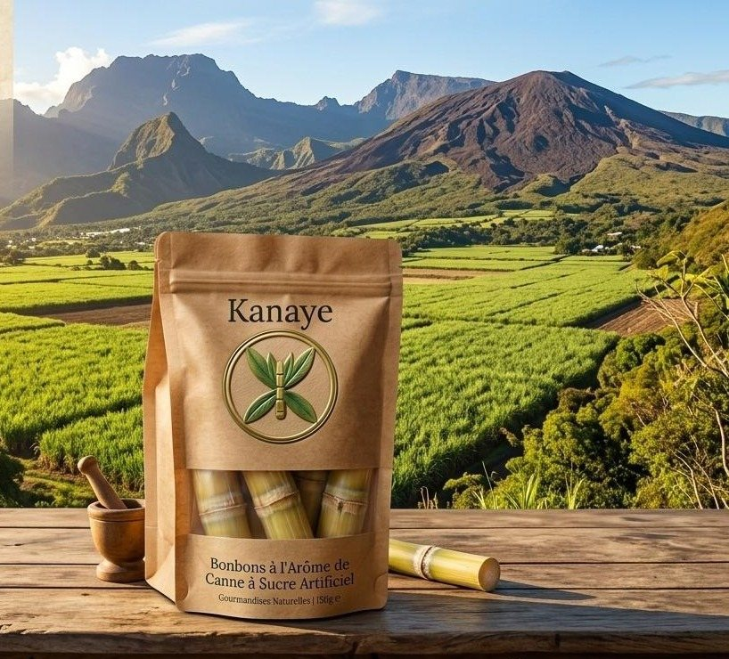
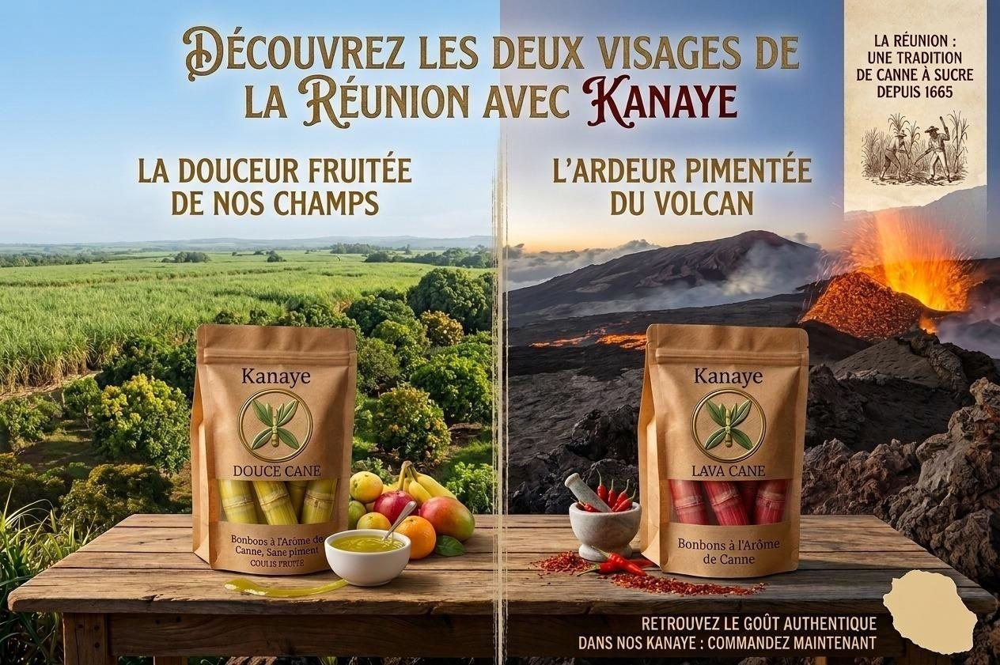
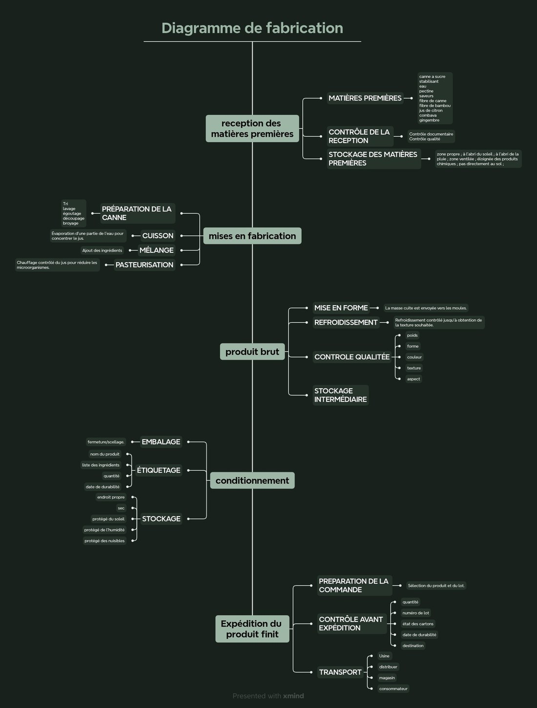
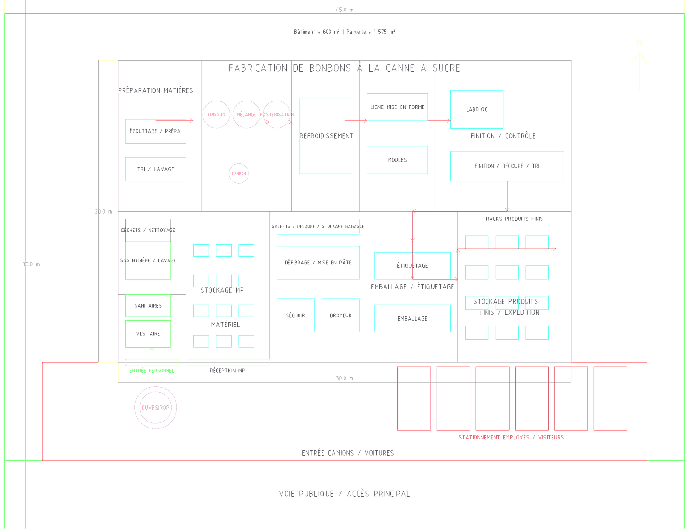

Confiserie péi, depuis La Réunion
La canne à sucre, réinventée à croquer.
Kanaye recrée la sensation exacte d'un tronçon de canne fraîche — une coque qui casse net, un cœur qui libère son jus — avec beaucoup moins de sucre et moins de calories.

Le Piton de la Fournaise en toile de fond — l'autre visage de La Réunion, celui de Lava Cane.
Le geste
Croquer, exactement comme sur la vraie canne
Sous la dent d'un tronçon de canne fraîche, une écorce fibreuse résiste puis cède, libérant la moelle sucrée. Kanaye reproduit ce contraste avec deux matières, pensées comme un vrai tronçon.
-
Une coque qui casse net
Un enrobage fin à l'agar-agar, appliqué sur une fibre de bambou légèrement torréfiée — pour une texture qui craque sous la dent, sans mâche interminable.
-
Un cœur qui libère son jus
Un gel ferme au jus de canne et à la pectine : il faut vraiment mordre pour qu'il cède et libère son jus — comme sur la canne, jamais comme un bonbon mou.
-
Moins sucré, plus de fibres
Érythritol et allulose remplacent une partie du sucre. Pectine et fibre de bambou apportent près de 13 g de fibres pour 100 g — d'où un Nutri-Score inhabituel pour une confiserie.
La gamme
Deux visages de La Réunion
D'un côté, la douceur fruitée des champs. De l'autre, l'ardeur pimentée du volcan. Déplacez le curseur sur l'image pour découvrir les deux éditions.

Douce Cane
La douceur fruitée de nos champs — coulis fruité, sans piment. Pensée pour les enfants et les palais délicats.
Lava Cane
L'ardeur pimentée du volcan — une note relevée, pour une expérience gustative plus intense.
Qualité nutritionnelle
Une gourmandise qu'on peut regarder en face
Des ingrédients comptés sur les doigts d'une main, une origine locale ou régionale pour presque tous, et un Nutri-Score qu'on ne s'attend pas à voir sur une confiserie.
Fiche ingrédients
- Jus de canne à sucre pressécœur
- Pectinecœur
- Agar-agarcoque
- Fibre de bambou alimentairecoque
- Érythritol & allulosecœur + coque
- Combava ou citron galetcœur
- Gingembre fraiscœur
- Vanille Bourboncœur
Nutri-Score théorique
Estimation théorique de laboratoire, non certifiée. Le taux de fibres est en partie porté par la pectine utilisée comme gélifiant technique — un Nutri-Score A sur une confiserie reste un résultat atypique, à expliquer clairement.
Allergènes — sur la base de ces ingrédients, aucun des 14 allergènes à déclaration obligatoire (règlement INCO) n'entre dans la composition de Kanaye : gluten, crustacés, œufs, poissons, arachides, soja, lait, fruits à coque, céleri, moutarde, sésame, sulfites, lupin, mollusques.
Fabrication
De la canne à l'usine
Un atelier dédié, pensé en marche en avant : les matières premières entrent d'un côté, le produit fini ressort de l'autre, sans jamais se croiser.


Notre histoire
Une tradition réinventée
Kanaye porte le nom d'un geste que beaucoup de réunionnais connaissent depuis l'enfance : croquer un tronçon de canne, jusqu'à ce qu'il ne reste plus que la fibre.
Lire le dossier technique complet ↗-
1665
La canne à sucre s'installe à La Réunion. Depuis, un geste se transmet de génération en génération : sucer et croquer un tronçon de canne fraîche.
-
2026
Le Challenge « Food Entrepreneur » de l'ESIROI réunit l'équipe M4PED autour d'une question simple : peut-on recréer cette sensation, en meilleur pour la santé ?
-
Aujourd'hui
Kanaye naît de cette question — une confiserie péi pensée de l'idée jusqu'au plan d'usine, avec des ingrédients locaux et régionaux.